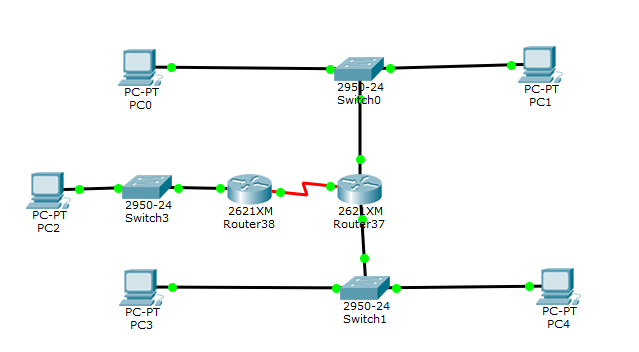
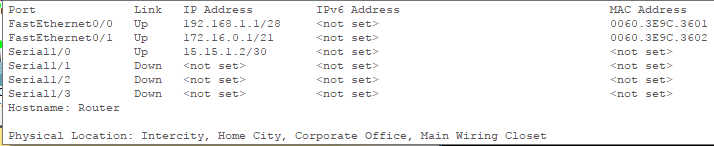
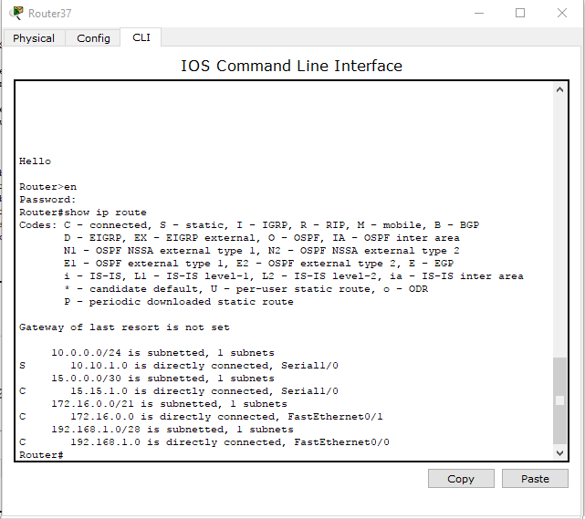
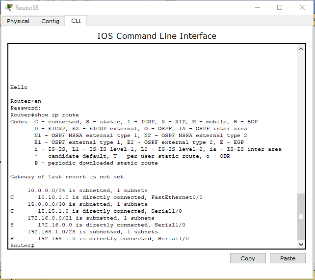
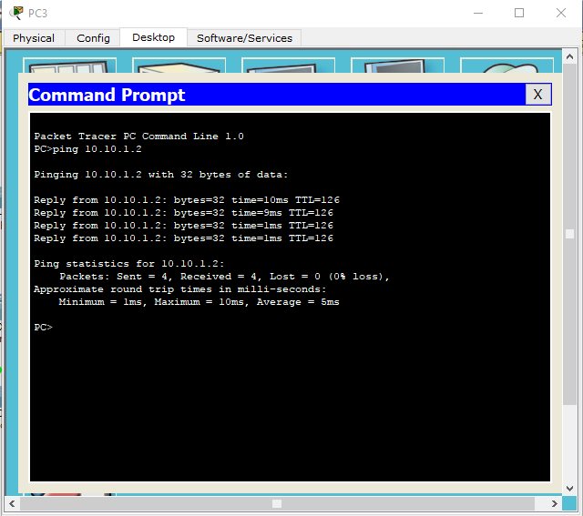
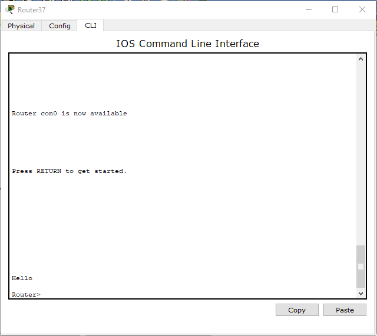
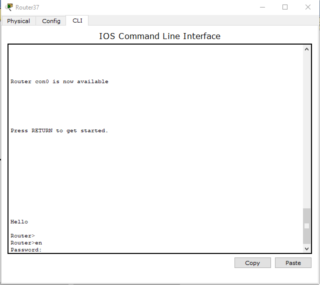
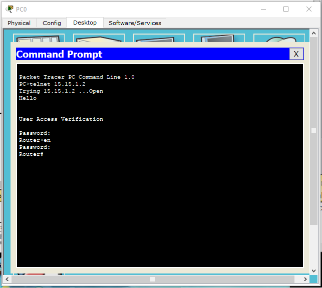

ЛАБОРАТОРНАЯ РАБОТА №3 "НАСТРОЙКА ЛОКАЛЬНОЙ СЕТИ ПЕРЕДАЧИ ДАННЫХ"
Расчет диапазонов подсетей.
| LAN A | LAN B | LAN C | Router | |
|---|---|---|---|---|
| Количество хостов в сети | 9 | 1765 | 190 | 2 |
| Маска | /28 | /21 | /24 | /30 |
| IP адрес сети: | 192.168.1.0 | 172.16.1.0 | 10.10.1.0 | 15.15.0.0 |
| IP адрес первого хоста: | 192.168.1.1 | 172.16.1.0 | 10.10.1.1 | 15.15.0.1 |
| IP адрес последнего хоста: | 192.168.1.14 | 172.16.7.254 | 10.10.1.254 | 15.15.0.2 |
| Broadcast | 192.168.1.15 | 172.16.7.255 | 10.10.1.255 | 15.15.0.3 |

Расчет адресов компьтеров
| Устройство | IP | Маска | Шлюз по умолчанию |
|---|---|---|---|
| PC0 | 192.168.1.2 | 255.255.255.240 | 192.168.1.1 |
| PC1 | 192.168.1.14 | 255.255.255.240 | 192.168.1.1 |
| PC2 | 10.10.1.2 | 255.255.255.0 | 10.10.1.1 |
| PC3 | 172.16.0.2 | 255.255.248.0 | 172.16.0.1 |
| PC4 | 172.16.7.254 | 255.255.248.0 | 172.16.0.1 |
Расчет адресов интерфейсов Router37

Расчет адресов интерфейсов Router38

Настройка статической маршрутизации Router37

Настройка статической маршрутизации Router38

Отправка пакета от PC3 до PC2

Проверка баннерного сообщения.

Проверка пароля на привилегированный режим

Проверка пароля на удаленный доступ к Router37 с компьютера PC0
